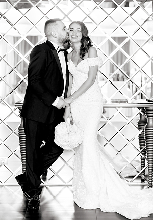
 попередні
попередні

Відвідайте наш інстаграм


Пориньте у світ романтики та подорожей разом із нашою галереєю весіль і подій у різних локаціях. Від камерних церемоній до масштабних міжнародних святкувань — J.KO Gallery створює події, що залишають сильне враження та поєднують у собі елегантність, яка не залежить від часу.

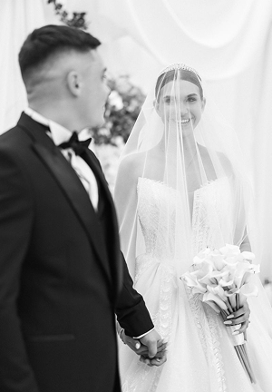
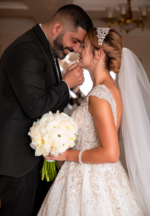
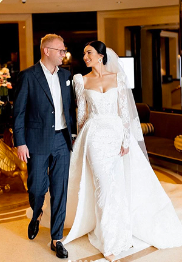
Пориньте у момент, де рішення набуває форми події, створеної як індивідуальна концепція з точно вивіреною естетикою, сценарієм і простором. Від камерних приватних форматів до складніших постановок у різних локаціях — кожен проєкт формується з урахуванням характеру пари та контексту події, де всі елементи узгоджені між собою й працюють на єдине враження, яке виглядає цілісно, доречно та зберігає свою цінність у часі.
Події, у яких стиль визначає структуру, а кожне рішення має свою функцію і працює на загальну композицію. Вечори та вечірки різного масштабу формуються як індивідуальні концепції з точно вибудуваним сценарієм, світлом, музикою та візуальною подачею, що відповідає рівню події й характеру простору.
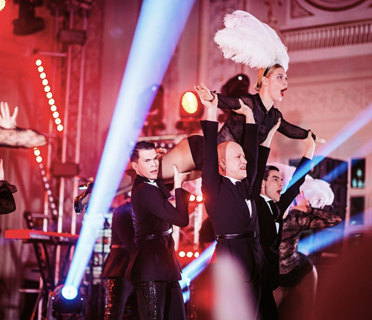
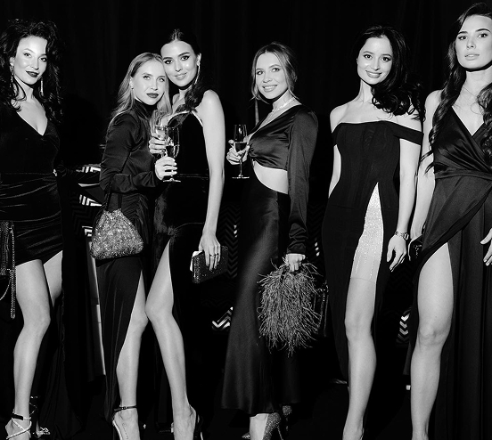
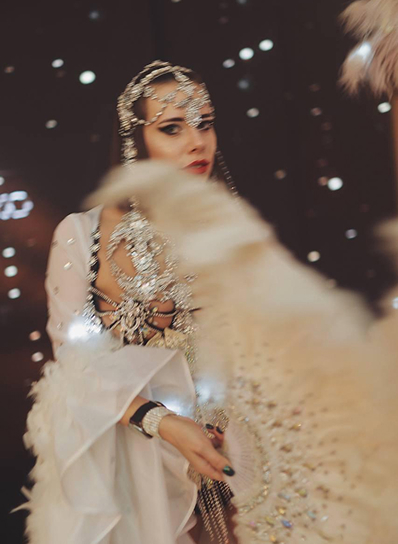
Відвідування подій Юлії та J.KO Gallery щоразу стає досвідом, до якого хочеться повертатися. Кожен захід відрізняється продуманістю, культурою подачі та відчуттям стилю, що читається в деталях, атмосфері й загальній побудові події, простір, у якому поєднуються естетика, зміст і внутрішня наповненість — коли отримуєш не лише враження, а й новий погляд, знання та натхнення. Відчувається авторський почерк, увага до якості та глибина підходу, що формують події, які залишають після себе чітке і цінне відчуття прожитого досвіду.
Свята, створені з увагою до дитини та відчуття сім’ї, де кожна деталь має своє місце і значення. Кожен проєкт формується як індивідуальна історія, у якій враховується характер дитини, атмосфера родини і простір події, щоб усе виглядало природно і цілісно. Візуальна подача, сценарій і динаміка поєднуються так, щоб дитині було цікаво й комфортно, а дорослим — естетично і спокійно, створюючи теплий досвід, який залишається в пам’яті.
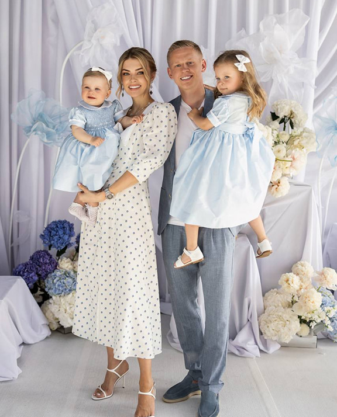
Події, створені для близького кола, де важлива атмосфера, настрій і відчуття моменту. Камерні вечори та girls parties формуються як індивідуальні концепції з продуманою візуальною подачею, сценарієм і деталями, що підкреслюють характер події та стиль учасниць. Простір наповнюється світлом, настроєм і деталями, які тонко підтримують атмосферу вечора, залишаючи відчуття естетики, близькості й часу, проведеного зі смаком.
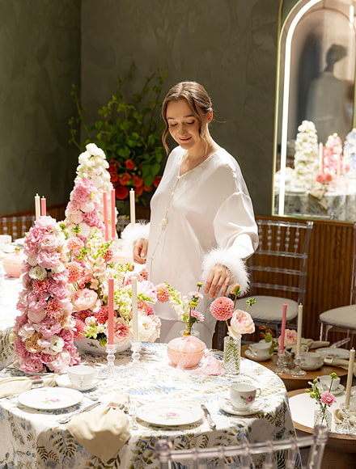
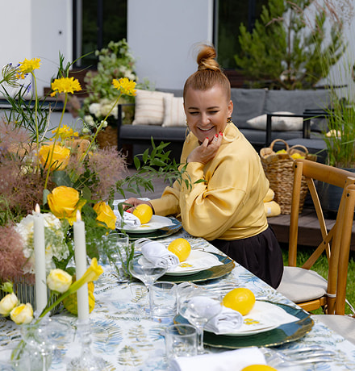
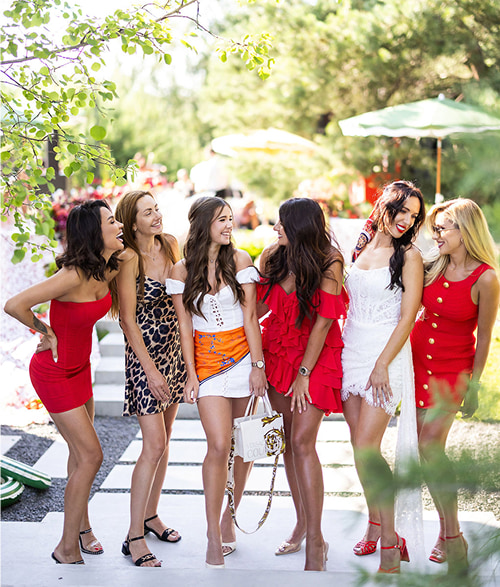
Події, у яких ідея задає не лише тему, а спосіб мислення простору, ритм взаємодії та рівень сприйняття. Авторські лекції й тематичні вечори формуються як індивідуальні концепції з точно вибудуваною драматургією, де зміст, візуальна мова і середовище працюють синхронно, створюючи інтелектуально насичений і естетично вивірений формат. Кожен проєкт залишає після себе не просто враження, а чітке відчуття прожитого досвіду, до якого хочеться повертатися.
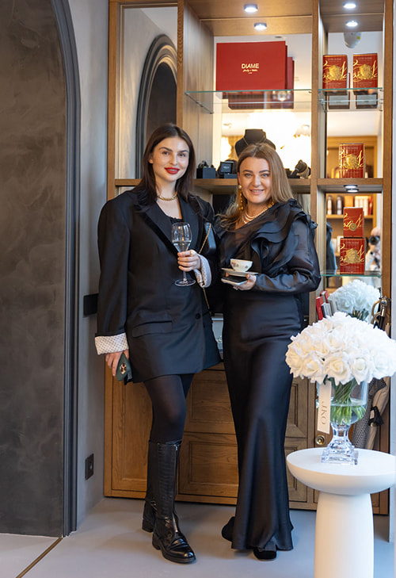
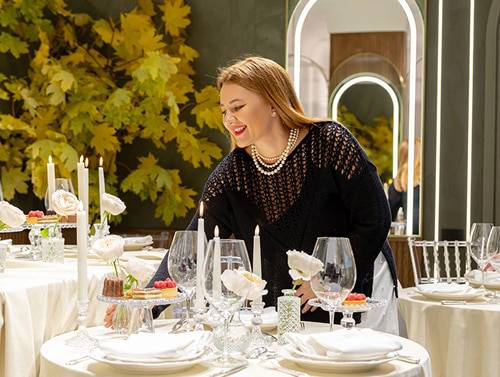
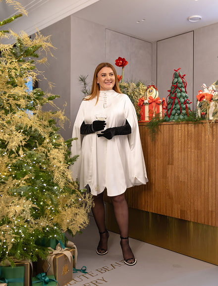
Подія, зібрана як цілісний вечір із власним ритмом, настроєм і візуальною мовою. J.KO Birthday Party вибудовується через світло, музику, простір і деталі, які працюють узгоджено і задають відчуття динаміки та рівня, створюючи атмосферу, в якій кожен момент відчувається точно, проживається глибше і залишає після себе стан, до якого хочеться повертатися.
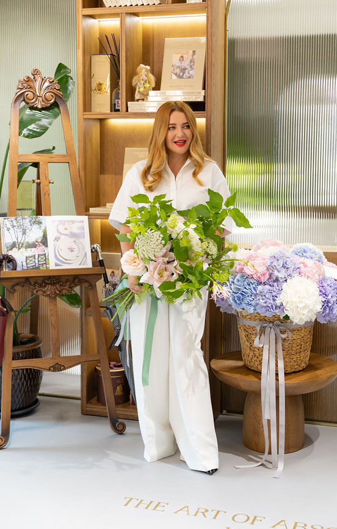
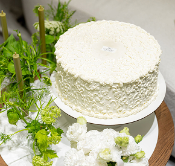
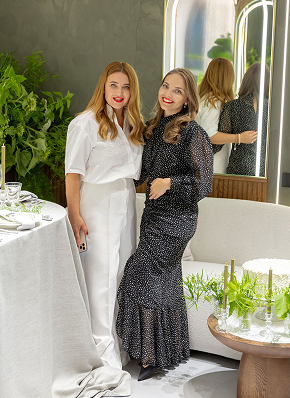